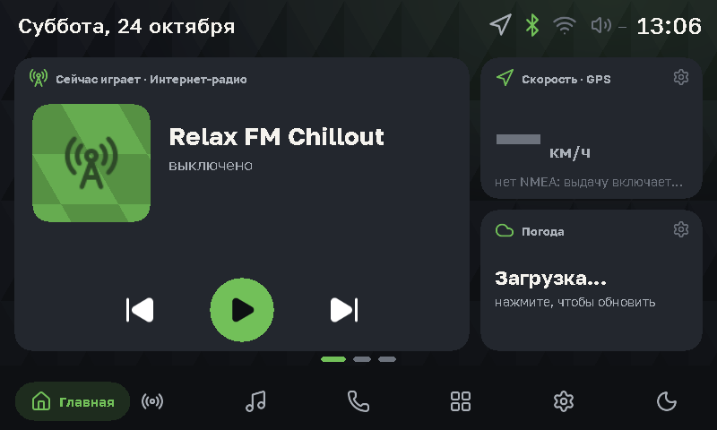
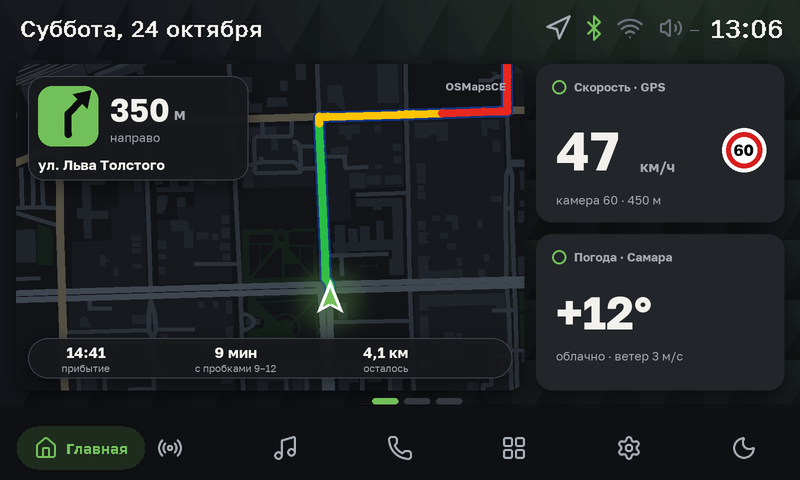
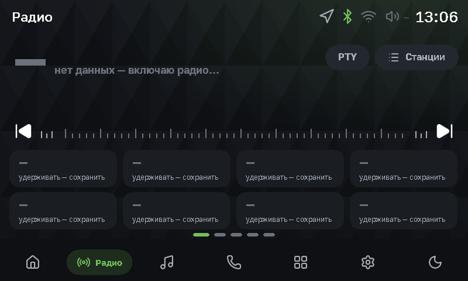
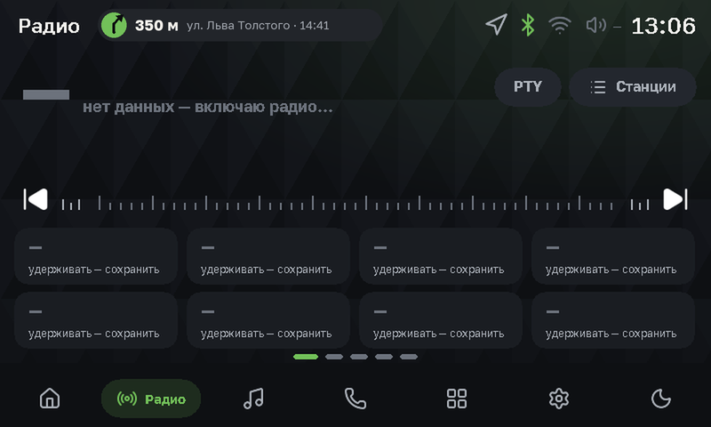
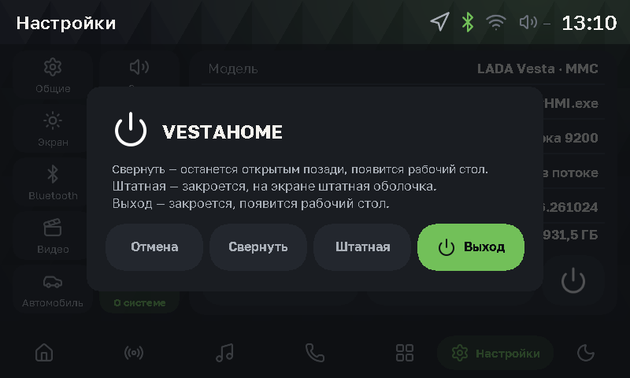
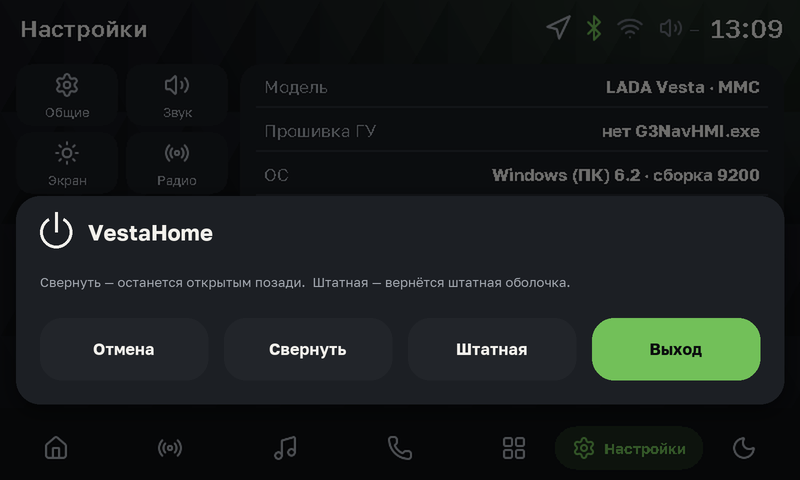
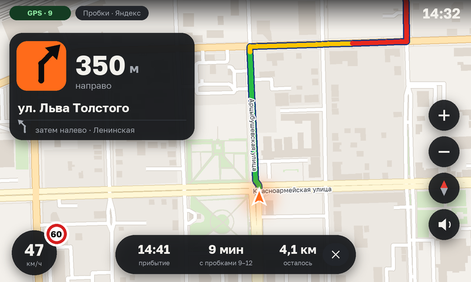
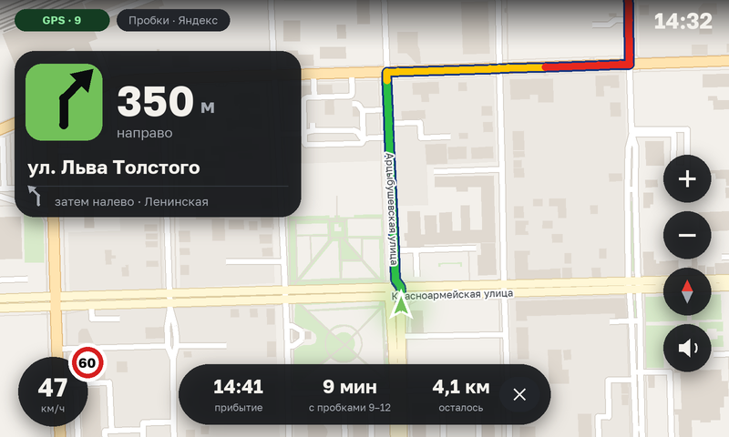
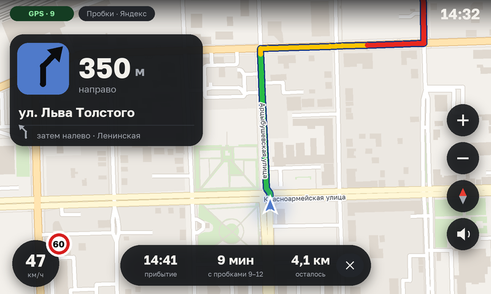

Слева — экран сейчас (ПК-сборка), справа — с идеей. Акцент — из темы VestaHome (у пользователя «Криптон»): им же в OSMapsCE окрашены машина и её подсветка, квадрат манёвра, активные кнопки и главная кнопка окна.
Пока в OSMapsCE идёт маршрут, она через API дополнений показывает на главной VestaHome виджет 2×2: живая карта по курсу, на ней карточка манёвра (стрелка в квадрате акцента, «350 м», улица) и строка поездки (прибытие, минуты с вилкой по пробкам, километры) — то же, что в самой OSMapsCE. Без маршрута — нынешний виджет «Карта OSM». Виджеты справа — по правилу «одна главная цифра»: скорость крупно, рядом знак лимита камеры; погода — градусы. Плитки получают мягкую тень (готовые 9-частные картинки тени — дёшево для CE).

сейчас

идея
Если OSMapsCE ведёт по маршруту, а впереди VestaHome (радио, музыка, телефон), в верхней строке рядом с названием экрана — «таблетка»: стрелка, расстояние, улица и время прибытия; касание — OSMapsCE вперёд. Данные — та же подписка API, что и у виджета.

сейчас

идея
Окно питания, подтверждения («Забыть сеть?», «Сбросить ошибки?»), входящий вызов — не по центру, а карточкой над нижней панелью на всю ширину, с тенью; главное действие — справа в цвет акцента, остальные — тёмные. Палец водителя ближе к низу экрана; так же сделано долгое нажатие в OSMapsCE.

сейчас

идея
Как в современных системах (Material 3, iOS, Škoda Flow): у кнопок и плиток обводок нет — их отделяют заливка и тень; главное действие — заливка акцентом. Рамка цвета акцента 2 px — только у выбранного, но не главного (выбранный вариант, поле ввода, текущая точка). Карточки, которые лежат поверх ночной карты, получают едва заметную кромку 1 px (тень на тёмной карте не видна); у VestaHome фон не карта — кромки нет. VestaHome уже так нарисован; OSMapsCE — с этой версии.
OSMapsCE берёт акцент из темы VestaHome: при подключении к VestaHome — из его сообщения (API дополнений: тема и её смена), без VestaHome — из screen.accent файла \SDMMC\VestaHome\VestaHome.ini (как заглушка для картинки загрузки); без файла — Марс. Им окрашены: машина и её мягкая подсветка, квадрат манёвра, «вкл.» кнопок, главная кнопка карточек, выбранный вариант и поле ввода. Цвета пробок и маршрута от темы не зависят.

OSMapsCE в теме «Марс»

OSMapsCE в теме «Криптон»

OSMapsCE в теме «Дайвинг»